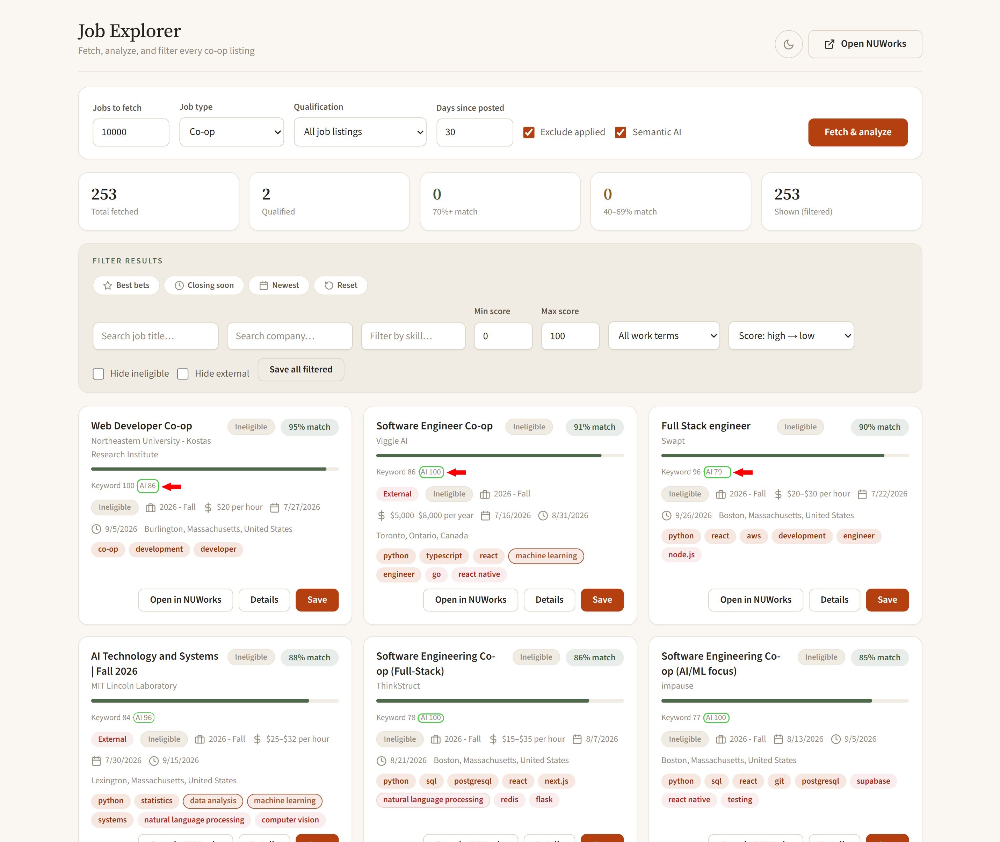
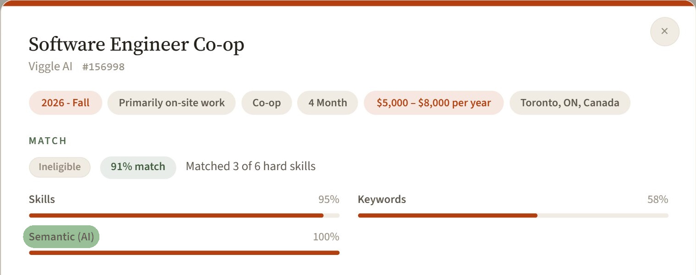
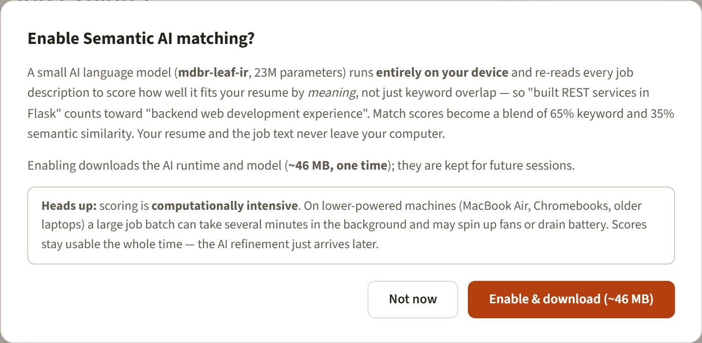
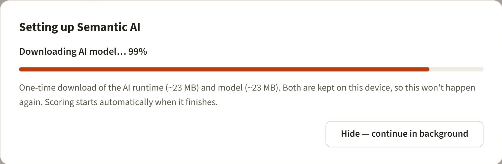

Where our users land offers

NUWorks Grader reads every posting the way you would — then scores it against your skills, flags the ones you're not eligible for, and saves the strong matches. Opt in to a resume-specific Semantic AI model, fine-tuned on 26,677 labeled resume–job pairs, to score by meaning—not just keywords. All in your browser, all private.
Where our users land offers


Match scores, an explainable breakdown for every job (now including a Semantic AI bar), smart filters, and a calm interface that follows your system light or dark theme.


Stop wasting time on jobs that don't match your profile. Let smart, on-device analysis do the heavy lifting.
Instantly see match scores, external-application warnings, and eligibility status with color-coded badges on the job list.
Filter by match score or freshness. Save all matched jobs in one click, or clean up your saved list just as fast.
Upload your PDF resume. We extract the text and skills locally to find your best matches.
A 33M-parameter BGE model fine-tuned for resume–job fit runs on your device and scores each posting by meaning. Match becomes 65% keyword + 35% AI, with the split shown on every card.
Listing React implies JavaScript; PyTorch implies Python. Related skills earn partial credit and show up as dotted chips, so you're not penalized for not spelling everything out.
Scores render from a single listing call — no per-job fetching. Extra details load in the background with a status chip, and the AI refinement never blocks the page.
Turn on Semantic AI and a compact model fine-tuned on labeled resume–job pairs runs entirely on your device, re-reading every posting to score how well it fits by meaning—not just keyword overlap.

The new int8 BGE model improves both rank correlation and top-of-list quality over the previous shipped model. Spearman measures how consistently stronger matches rank above weaker ones; NDCG@10 rewards putting the best jobs near the top.
Int8 ONNX, semantic-only ranking on an untouched, resume-grouped test split (46 rankable resumes). Top-choice accuracy was 58.7% previously. On the separate 962-pair NeuralFrame test, Spearman was 0.611. Public-dataset metrics are ranking measures, not hiring success rates.
The classic scorer checks required skills, keywords, and eligibility — fast, transparent, and always on. It now also credits implied skills: React on your resume counts toward a JavaScript requirement.
mdbr-leaf-mt-resume-grader
is now a 33.36M-parameter
BGE-small
fine-tune trained on 26,677 resume–job pairs. It embeds your
resume and each posting, then measures how close they sit in
meaning. “Built REST services in Flask” counts toward “backend
web development”.
Your final match is 65% keyword + 35% semantic. Every card shows the split (Keyword 96 · AI 79) and the details view adds a dedicated Semantic (AI) bar so you can see exactly what moved the number.
Open any posting and the match breakdown shows Skills, Keywords, and Semantic (AI) side by side. Hover a card's split to see the raw cosine similarity behind the AI number.



Quickly identify if a job application is inactive or if you were not selected.
Open an improved NUWorks with advanced filtering, match percentages, and all the original features.
No account. No configuration. Install, upload, analyze.
Add the extension from the Chrome Web Store, or load it unpacked from GitHub.
Open the extension on NUWorks and upload your resume PDF, or paste the text.
Hit "Analyze jobs" to see your match scores and filter the results instantly.
Built by a Northeastern student, for Northeastern students. Free, open source, and private.
Add to Chrome — it's free